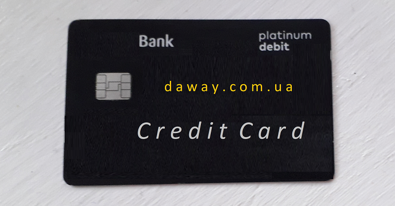

Практично всі банки України пропонують своїм клієнтам оформити
кредитну картку. І вам мабуть неодноразово доводилось отримувати пропозиції від банків, при чому
кожен з них презентує свій продукт, як один із найкращих на ринку. Давайте спробуємо розібратись
чи варто оформляти кредитну картку та як обрати найкращу пропозицію.
Основна особливість кредитної картки, як банківського продукту - наявнівність пільгового, або як
його також називають грейс-період. Інші види споживчих кредитів для фізичних осіб не мають такої
характеристики. Що ж таке пільговий період? Це період протягом якого клієнт не сплачує банку
відсотки за користування кредитних коштів, зазвичай такий період може тривати до 40-90 днів.
Також варто розуміти, за яких умов цей період діє, коли найкраще користуватись коштами, і коли
краще погашати борг. Всі ці умови в кожному із банків можуть бути різними, і для того, щоб
отримати максимальну користь від користування кредитної картки дотримуйтесь наступних
рекомендацій.
1. Не оформляйте та не використовуйте Кредитну картку,
якщо Вам потрібно кошти в сумі значно більшій ніж ваш дохід. Для цього краще оформити готівковий
кредит, або ж заставний, на них нижчий %, та оплачувати його посильними для вас щомісячними
платежами.
2. Використовуйте кредитну картку виключно для отримання
додаткового доходу. Для цього вам потрібно попередньо визначити скільки становлять ваші
стабільні щомісячні витрати на продукти чи товари. Наприклад, ваша зарплата 20 тис. грн. в
місяць, з яких ви витрачаєте 10 тис. грн. на продукти та інші товари, зазвичай, ви їх купуєте в
магазинах чи супермаркетах, при цьому можете оплачувати їх своєю зарплатною карткою. Таким
чином, для отримання додаткового доходу, вам буде краще здійснювати ці покупки за допомогою
кредитної картки, а частину зарплати одразу переказувати на депозит, по якому банк буде
нараховувати вам відстоки. Важливо - обов'язковою умовою є те, щоб обраний вами депозит
передбачав вільний доступ до коштів. Поки діє пільговий період на кредитній карті, ваша зарплата
перебуває на депозиті, перед закінченням пільгового періоду кошти з депозиту потрібно переказати
на кредитну картку, і нараховані відсотки за депозитом й будуть вашим додатковим заробітком.
3. Старайтесь ніколи не виходити за пільговий період, оскільки вам буде
нараховуватись обов'язковий щомісячний платіж, який включатиме нараховані відсотки за
користування кредитними коштами.
4. Які критерії для вибору банку при
оформлення кредитної картки. Обирайте пропозицію, по якій відсутні щомісячні комісії за
обслуговування кредитної картки. Зазвичай такі комісії можуть утримуватись банком за невиконання
певних умов користування карткою, але вас це буде змушувати додатково контролювати дотримання
цих умов. Другим важливим критерієм є зрозумілий принцип дії пільгового періоду. Найкраще, коли
він діє до кінця місяця - так легше контролювати вчасне повернення коштів. Віддавайте перевагу
банку, в якому ви отримуєте зарплату, звісно, якщо вам підходять перші дві умови. Також
перевагою буде, якщо у вашому банку є можливість оформити депозит на вимогу, тобто з вільним
доступом коштів в будь-який час, але тут важливо також розмір відсоткової ставки на такий
депозит. Зверніть увагу на наявність у вашому банку повноцінного додатку з онлайн-банкінгом, для
контролю за коштами та переказами між власними рахунками.
5. Слідкуйте
за партнерськими програмами та акціями, у яких ви можете приймати участь як власник кредитної
картки. Багато таких програм дозволить вам економити при покупках товарів чи послуг, або ж
накопичувати додаткові бали, які також можна конвертувати в гроші, призи чи знижки.
6. Кредитна картка за кордоном. Дуже часто клієнти оформляють кредитну картку для
поїздки за кордон. В більшості країнах Європи, при бронюванні готелю, оренди автомобіля, чи
іншого майна продавці вимагають надати для розрахунку саме кредитну картку, оскільки для них її
наявність підтверджує вашу платоспроможність, адже, якщо банк оформив вам кредитну картку,
значить вас перевірив та довіряє кредитні кошти.
І на кінець мабуть
золоте правило - якщо вже хочете оформити кредит, то тільки для того, щоб на ньому заробити, чи
використати його як вигідну інвестицію. Бажаємо всім благополуччя.

Опубліковано 6-04-2021